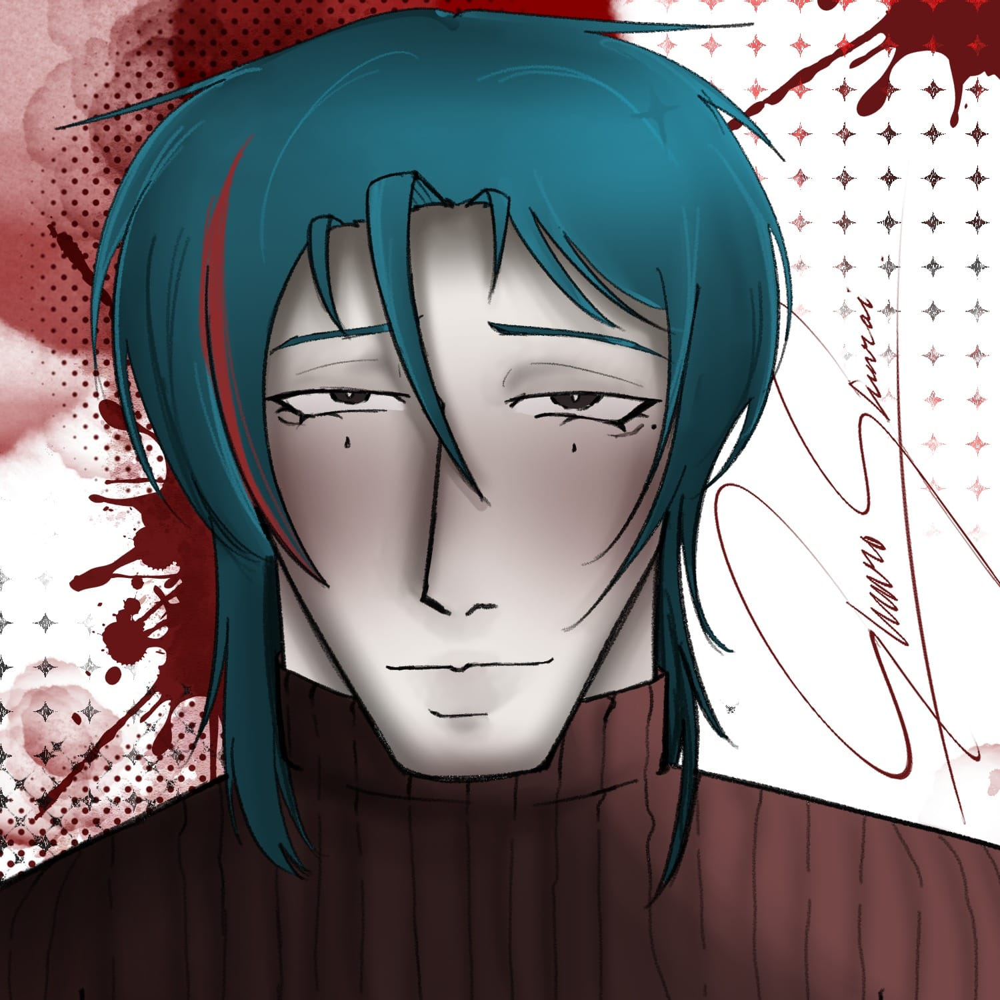
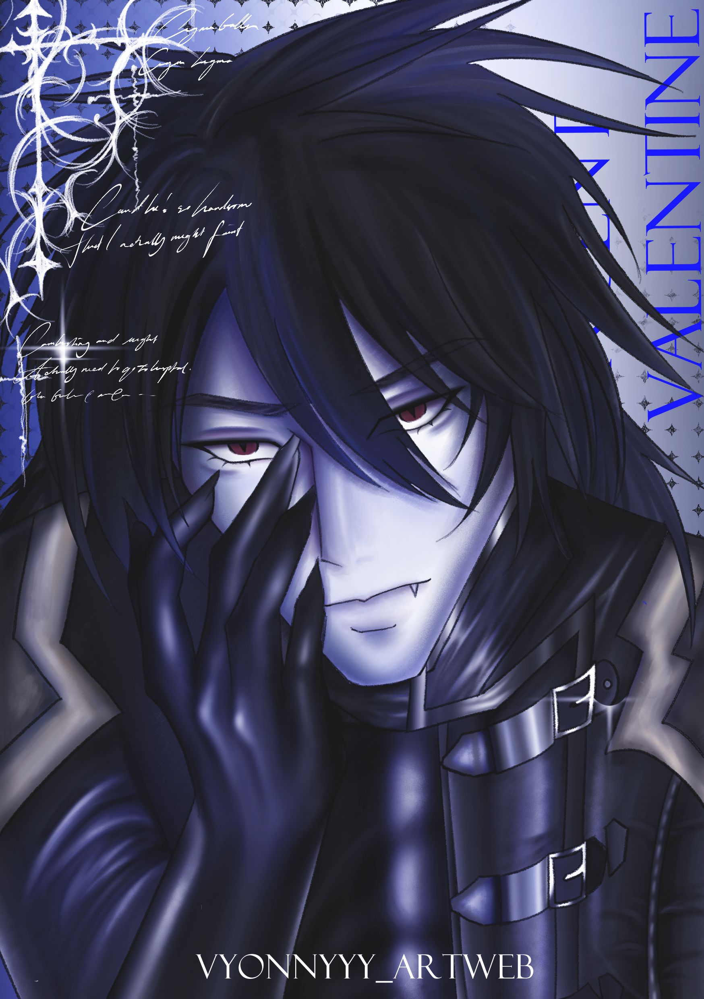
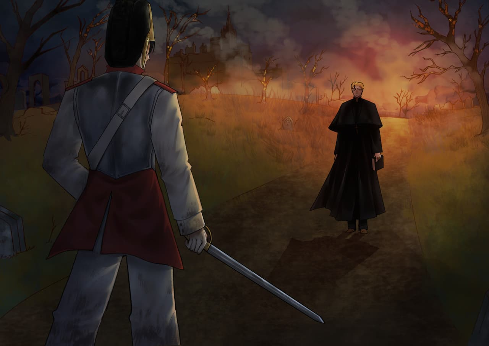
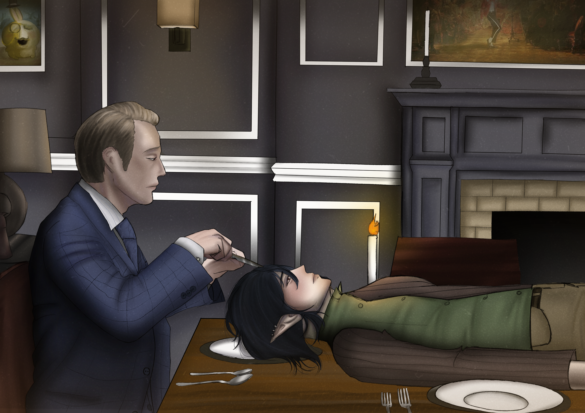
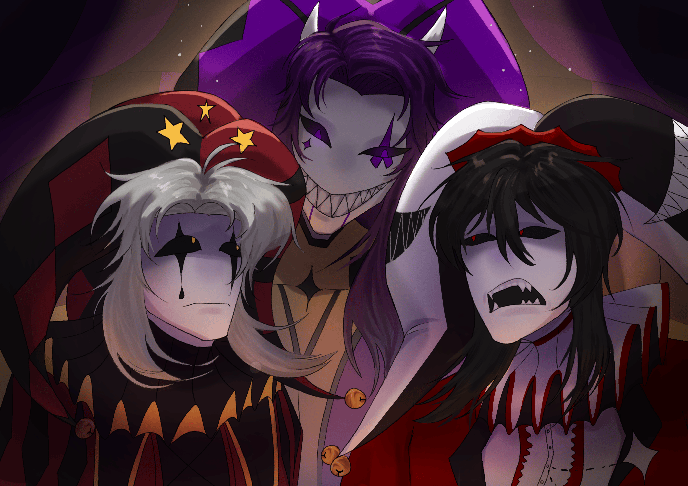
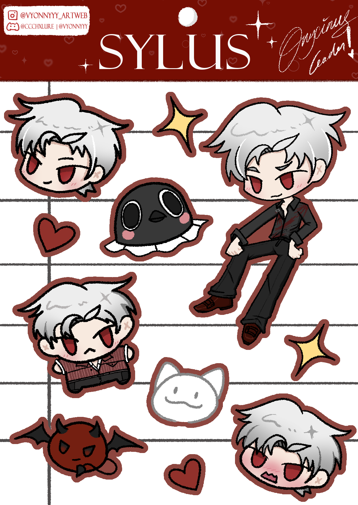
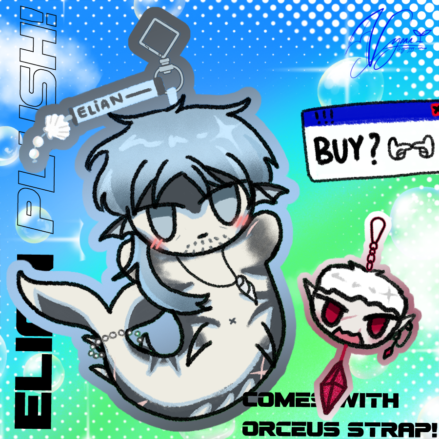

My Original Character - shinro shinrai
Shinro is a character I created based on inspiration from the movie Obsession - 2026, which I eventually adapted. I was inspired by a character in that movie named Nikki, and I made Shinro similar to that character.

Vincent Valentine - Final Fantasy VII
The illustration I drew using Clip Studio Paint was made for the Chibicon and CF23 events. I used a mix of various brushes that I blended into a single piece.

A fight in Kaub - German
This is an illustration I drew from the game 'Guts And Blackpowder' that depicts warfare in the Napoleonic era. I used my original character, Xeo, as the cuirassier on the left, and I used Clip Studio Paint software to create this piece..

Vyonn is haunted by a disturbing hallucination in which Hannibal prepares to eat her. After awakening from the nightmare, she finds herself comforted by Hannibal himself, leaving her uncertain whether he is truly someone she should fear—or someone she can trust.
This is an illustration that I drew inspired by the TV series 'Hannibal.' I depicted my original character, Vyonn, who is shown as a woman sleeping on the dining table. I used Clip Studio Paint to create this piece.

Pierrot and Mimic team up to scare Jester, the purple clown, but their prank quickly backfires when Jester catches them first. Instead of being scared, the two end up getting startled and scolded by their own target.
This is an illustration that I drew inspired by the game 'The freak circus' and i added some of the characted originated from the actual game there such as Pierrot and Jester, on the right was my original character named the Mimic. I used Clip Studio Paint to create this piece.

One out of five stikerpack / sticersheet that i made
This is an illustration of a merchandise that i made, which was a stickersheet of a character from the game 'Love and Deepspace' - Sylus. the stickersheet consisted of 1 full-body character, 2 head chibi, 1 full-body chibi and other supporting element. the stickersheet was designed to look like a small notebook or paper. was made using clip studio paint.

Art of my friend's character for an event
This is an illustration that I drew for an annual event called artfight, and in the picture i was making an art based on my friend's oc which was a demi marine human, on the right was my original character named Orceus. I used Clip Studio Paint to create this piece.